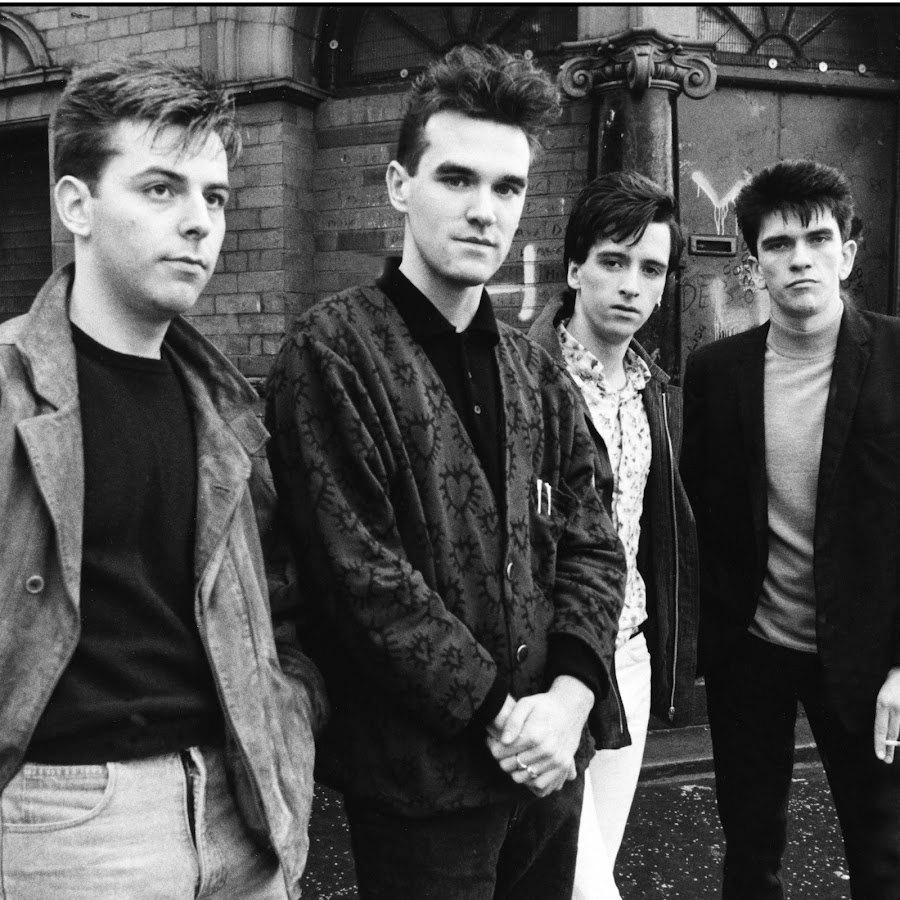

A banda foi formada no início de 1982 por Steven Patrick Morrissey, um escritor que era grande fã de New York Dolls e que foi vocalista por um curto período da banda de punk rock The Nosebleeds, e pelo guitarrista e compositor John Maher (que, posteriormente, alterou o seu nome para Johnny Marr para não ser confundindo com o baterista da banda Buzzcocks).
O nome da banda foi escolhido, em parte, como uma maneira de contrapor os nomes usados por bandas de synthpop como Orchestral Manoeuvres in the Dark e Spandau Ballet, pois para os músicos, tais nomes soavam pretensiosos demais. Em uma entrevista em 1984, Morrissey afirmou que escolheu o nome "The Smiths" porque dos nomes era o mais comum, e por pensar que "era o momento em que as pessoas comuns mostravam seus rostos.Em tradução livre, o vocábulo "Smith" - um sobrenome muito comum na Inglaterra (comparável ao "Silva", no Brasil) - seria "ferreiro" ou "serralheiro".